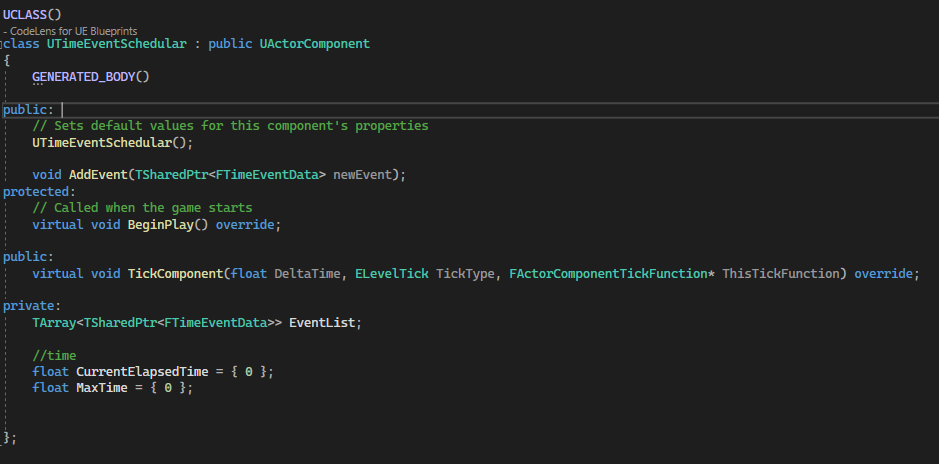

The Time Event Schedular is something I came up with when going over a selected part of a game mechanic that will be in a personal project. I want to implement a basic weather system, but the player must be able to get information about possible weather changes through a device.
Usually you would keep the total elapsed time in the class itself and when exceeding the limit, the desired logic happens. Many times having these variables, representing time, starts to make the class more than what it was meant to be.
For the weather system, who's purpose is to control game mechanics that rely on weather.
Of course having only one class who uses the Update function for calling time-based events is not so bad. But if you have multiple mechanics that need time-based events that lead from seconds to minutes before they are actually called would mean that the engine would need to go over multiple classes that use the same logic, but some happen to do something later than others.
So I was thinking, "Can I have a class that only uses 2 time variables and call events at the right time?".
Using pen and paper I wrote possibilities of actions that could happen when adding a new event to the stack and came to a conclusion that it was possible to do so.
Command Pattern
It became quite clear I had to use the Command Pattern in order to achieve my goal.
TimeEventData
I needed a data structure for the basic information that would be required. I also added a possible future option for repeatable events at fixed intervals.
TimeEventSchedular
